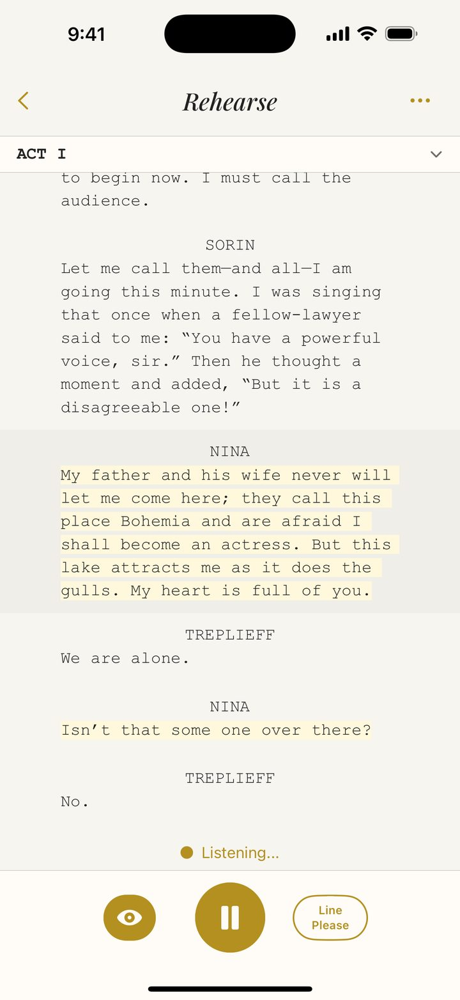
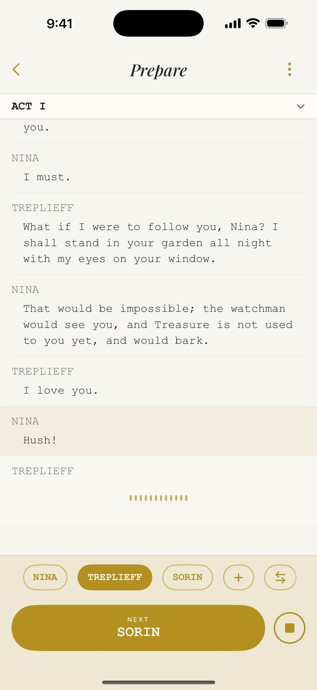
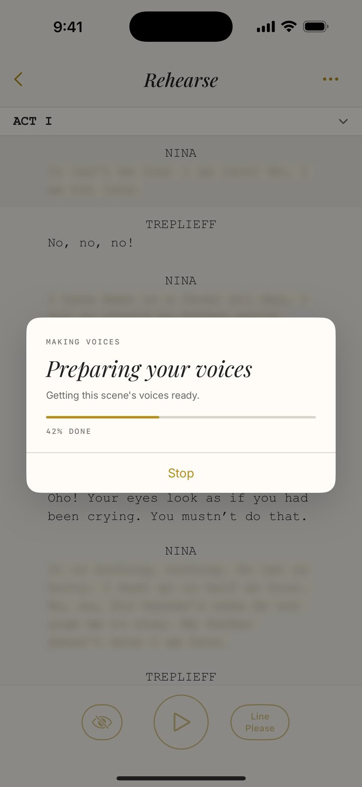

It listens.
So you can too.
Line Run gives you your cue and waits for your response, so you can stop reciting and start acting.

Getting off book is the hardest part of the job.
It usually happens in the living room: your script in one hand, the other covering your lines.
That’s how I memorized for years, and it never came easily. I would read the other lines and recite mine, never really listening.
The words didn’t stick because I wasn’t thinking the thoughts.
Hear it. Don’t read it.
Line Run speaks the line before yours, then listens for your response. You think the thoughts and connect the dots, so the words stick.
Every character has a voice, so you’re hearing a scene, not reading one.

Record it, or import it.
Record the other characters yourself, once. It’s the more lifelike way: your own pacing, your own pauses, each part pitched up or down so they sound like different people.
Or let Line Run Pro do the work. Import your script and every other part gets a natural-sounding voice, made right on your phone.
One is more lifelike, the other is less effort. Either way, it sounds like a cast running the scene with you.


Built for actors, by an actor.
Hi, I’m Kelly. I’ve been in this industry for over 25 years, and memorizing is still a challenge.
I built Line Run so that we can get off book sooner, with confidence, and rehearsal can be about the acting.
Proudly made in Canada.
Private by design.
There is no account and nothing to sign up for. There are no ads and your data will never be sold to anyone. Your recordings stay on your phone, and the generated voices are made there too, not in a data centre.
Free forever.
More when you need it.
Free
Free
A tool for auditions and less demanding roles.
- ✓ One script, up to three scenes
- ✓ Record the other parts in your own voice
- ✓ Four ways to rehearse
- ✓ Say “Line, please” when you go blank
- ✓ Loop tricky sections
Line Run Pro
$39.99/year
With a free trial to start. Cancel anytime.
- ✓ Everything in Free
- ✓ Unlimited scripts and scenes
- ✓ Import a script, including scanned pages and sides
- ✓ A voice for every other character, made on your phone
I know how tough it is out there for actors to make ends meet, so I’ve priced this low to cover costs, not to profit.
Questions or ideas? Write to me at hello at linerunapp dot com.
Get Line Run for iPhone.